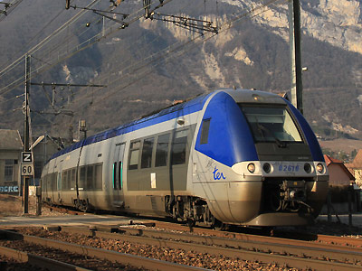
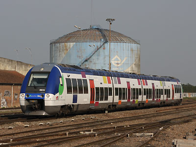
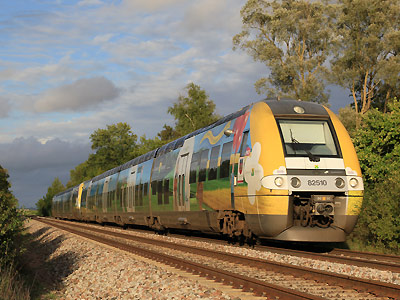
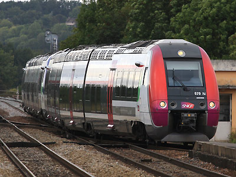
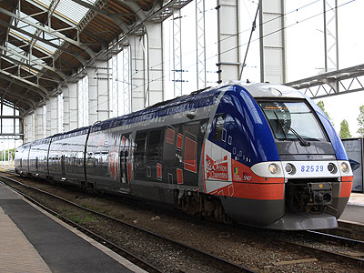
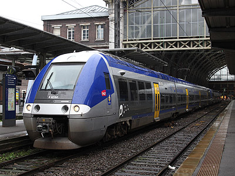
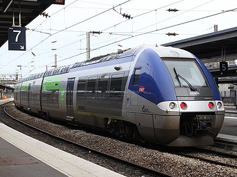

Ferrovia - 03 Juin 2012
B 82500
BGC Bibi
Autorails Bimode Diesel / Electrique Bicourant 1,5kV continu - 25 kV 50 Hz. Ils font partie de la famille des AGC.
Quelques données techniques
Constructeur : Bombardier
Pour plus d'info :
La fiche B 82500 sur Wikipedia
L'inventaire des B 82500 sur Trains du Sud-Ouest

Le B 82618/17 Rhône Alpes à Culoz (18/02/2012)

Le B 82559/60 Transilien devant la sucrerie de Nangis (08/05/2010)

Le B 82510/09 Champagne Ardennes à Longueville (11/09/2011)

Le B 82679/80 en livrée STIF à Longueville fait l'impasse pour Provins (11/09/2011)

Le B 82529/30 en livrée Poitou-Charentes à La Rochelle (30/06/2012)

Les B 82760-59 et 82627-28 Nord Pas de Calais en UM prêts à assurer un Lille Flandres / St Pol sur Ternoise (29/10/2012)

Le B 82670-69 Picardie au départ d'Amiens pour Albert (29/10/2012)